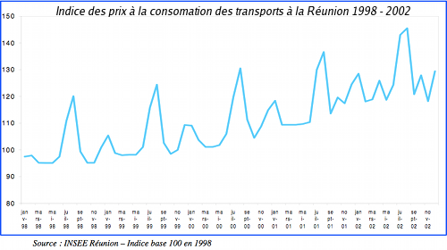

Les études sur le tourisme à la Réunion
En ce mois d'octobre 2014, l'IEDOM, l'Institut des Émissions de Départements d'Outre Mer, a rendu public une étude sur le tourisme à la Réunion. Le sous-titre peu encourageant fait état d'« une activité qui peine à décoller ». Ce rapport fait écho à un autre rapport de la Cour des Comptes cette fois, qui avec le titre Le tourisme en outre-mer : un indispensable sursaut (PDF, 549,82 kB) épinglait déjà les DOM en février dernier.
| Le logo de l'office de tourisme à travers les ages |
Les deux organismes relèvent que depuis dix ans, le nombre de touristes à la réunion a stagné. Il pointent comme problème majeur l'hétérogénéité des visiteurs et la quasi saturation de l'offre hôtelière.
La saturation hôtelière
Selon la note de l'IEDOM, le taux de remplissage des hôtels classés frôle les 75 % ce qui est proche de la saturation. Cette note ne fait pas du tout mention d'offres alternatives comme la location de meublés, les gites ou les séjours à la ferme que je présentais en 2004. Mais comme le note le rapport de la Cour des Comptes S’il apparaît très positif et prometteur pour l’avenir, le développement croissant de structures d’hébergement diffus (chambres d’hôte, gîtes, meublés de tourisme, etc.) aux Antilles et à La Réunion ne peut pas entièrement remplacer les capacités hôtelières manquantes.
La clientèle hétérogéne
La clientèle locale représente selon le rapport la moitié du chiffre d'affaire touristique de l'île, le reste de la clientèle est presque exclusivement métropolitaine, ayant parfois de la famille sur l'île. La fréquentation de l'île de la réunion fluctue au rythme des vacances scolaires françaises ce qui contribue à la saturation de l'offre aérienne dans ces périodes. Le problème n'est pas nouveau, un rapport de l'IEDOM datant de 2002 montre la variation du coût de la desserte réunionnaise sur un graphique très parlant. On y voit les faramineuses augmentations saisonnières des prix.

Toutes les notes et rapports pointent le manque de variété dans la desserte aérienne de la Réunion. Seules six compagnies avec Paris pour seule destination long courrier sont présentes sur le marché. À titre de comparaison, la voisine Maurice est reliée par 16 compagnies qui desservent 24 destinations.
La crise, les crises
La Réunion a surtout souffert de plusieurs crises. La crise chikungunya en 2006 fut la première et la plus dure vu que le nombre de touristes a été divisé par 2 cette année là. La crise économique commencée en 2008 n'a pas aidé la Réunion qui peine à retrouver un contingent de visiteurs équivalent à l'année 2005. En 2012 encore, la fréquentation de l'île a chuté avec 446.500 visiteurs contre 471.300 l'année d'avant. Une baisse que la Cour des Compte explique par la crise du requin. L'INSEE indique par ailleurs, dans une étude sur le flux des passagers aériens à la Réunion que le nombre de touristes a encore plus baissé en 2013. Une chute de 6,8 % avec moins de 416.000 visiteurs.
Pourtant, tout ne va pas si mal comme le dit l'agence IPR dans un article compte-rendu. Le secteur du tourisme ne compte que pour 2,6 % du PIB réunionnais soit un niveau comparable à celui des Etats-Unis et de l'Afrique du sud, bien loin des 10 % de l'île Maurice. Cela signifie que la Réunion a d'autres atouts que le tourisme pour faire vivre son économie. Cela dit, le secteur emploie quand même 13.000 personnes, personnes qui ne doivent pas accueillir ces chiffres avec bonheur.
| L'ancien et le nouveau logo Réunion qualité tourisme | |
La Réunion a des atouts naturels a partager, un patrimoine classé et unique capable d'attirer les touristes. Si la Cour des Comptes dénonçait les politiques publiques inefficaces c'est aussi aux autres acteurs de montrer qu'ils sont capables d’innover et d'accueillir une nouvelles clientèle qui sera à son tour captivé par la Réunion.